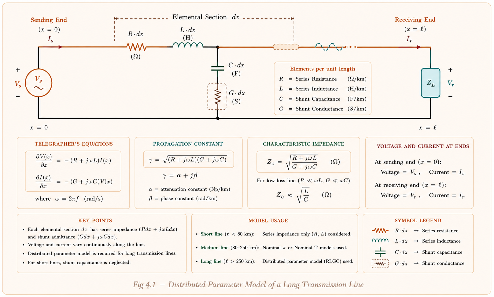
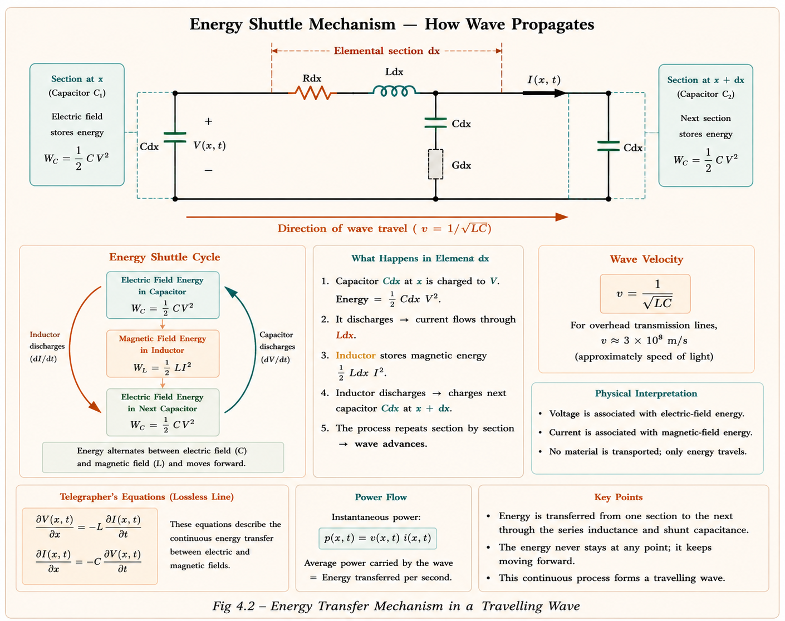
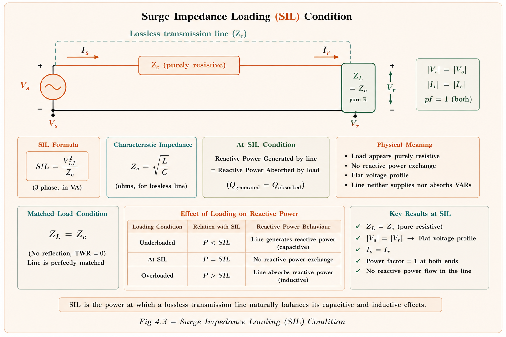
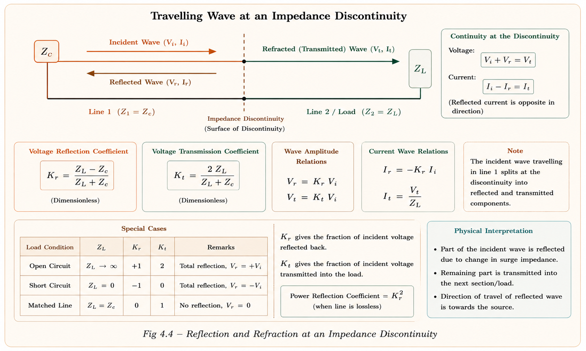
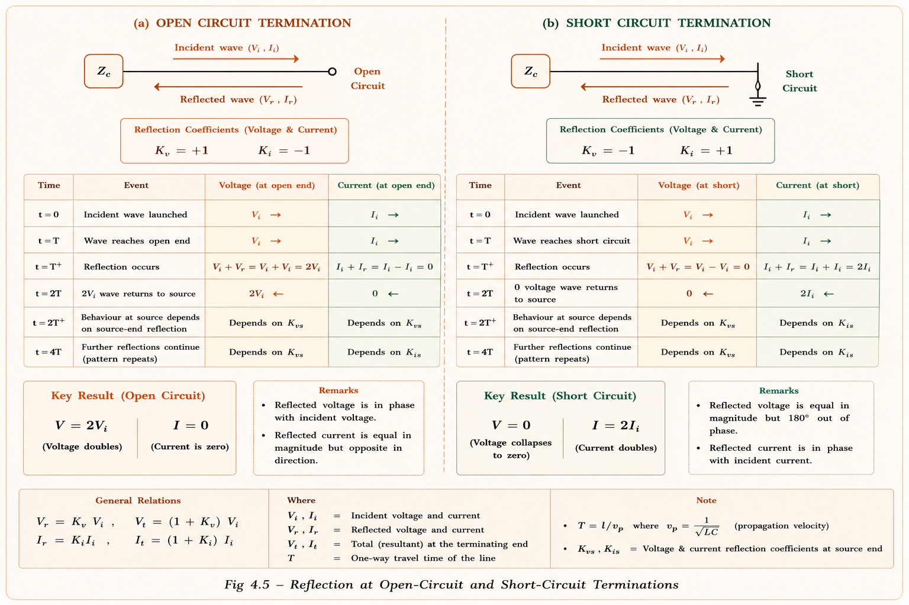

Transmission Lines & Travelling Waves
A complete deep-dive into transmission line distributed parameters, velocity of wave propagation, propagation constant, surge impedance, Surge Impedance Loading (SIL), and travelling wave analysis — essential for GATE EE, IES/ESE, and PSU interviews.
Big Picture — Why Travelling Waves?
When lightning strikes a power line or a circuit breaker suddenly opens, a high-voltage impulse travels along the line like a wave on a stretched rope. If this wave is not understood, the resulting overvoltages can destroy transformers, insulators, and switchgear. Travelling wave theory allows engineers to predict these overvoltages and design protection systems accordingly. This is a 5–8 mark topic in GATE EE every year.
A long transmission line is not simply a wire with resistance. It is a distributed parameter system — every tiny elemental length dx has its own inductance, capacitance, resistance, and conductance. When a voltage or current disturbance enters such a system, it does not appear instantly at the far end — it travels as a wave at finite velocity, just like a sound wave or a light wave.
Imagine a garden hose full of water. If you suddenly press one end, the pressure wave takes finite time to travel to the other end. The water at the far end doesn't move instantly. Similarly, when a surge voltage hits one end of a transmission line, it travels at the speed of light (or a fraction thereof) and reaches the far end after a definite time delay \(T = \text{length}/v\).
Where This Appears in Industry
- ▸Surge arresters at substation entry points are sized using surge impedance
- ▸Cable-line junctions cause reflections — engineers use bifurcated-line theory to calculate voltage at junction
- ▸Lightning protection of overhead lines in grid-scale solar and wind farms
- ▸SIL concept used for reactive power compensation planning
- ▸EHV (400 kV, 765 kV) lines in India are loaded near SIL for efficiency
- ▸HVDC cable systems use surge impedance matching at converter stations
Distributed Line Parameters
Unlike a short transmission line (modelled as lumped R and X), a long transmission line must be modelled as a distributed parameter system. Each infinitesimally small section \(dx\) of the line has the following four parameters per unit length:
| Symbol | Parameter | Unit | Physical Meaning |
|---|---|---|---|
| \(R\) | Series Resistance | Ω/km | Copper losses in conductor |
| \(L\) | Series Inductance | H/km | Magnetic flux linkage around conductor |
| \(C\) | Shunt Capacitance | F/km | Electric field between conductors |
| \(G\) | Shunt Conductance | ℧/km (S/km) | Leakage current through insulator |

For an overhead line, G ≈ 0 (insulators have very high resistance). For underground cables, G cannot be neglected because the dielectric material has finite losses. In most GATE problems, the line is treated as lossless (R = 0, G = 0) unless stated otherwise.
Formulas for L and C per unit length
For a two-wire overhead transmission line, the per-kilometre values of inductance and capacitance are derived from the geometry of conductors using Biot-Savart and Gauss's laws respectively:
Velocity of Wave Propagation
This is the speed at which an electromagnetic disturbance (voltage or current wave) travels along the transmission line. It is derived from the fundamental telegrapher's equations by analysing how the magnetic and electric fields build up in the distributed LC sections.
Derivation from First Principles
Consider a small elemental section of the line with inductance \(L\) H/km and capacitance \(C\) F/km. The wave equation of a lossless line gives:
Now substituting the expressions for \(L\) and \(C\) for an overhead line:
Note: \(\ln(\text{GMD/GMR}) \approx \ln(\text{GMD}/r)\) for solid round conductors, so: \begin{align*}\boxed{v = \frac{1}{\sqrt{\mu_0\varepsilon_0\varepsilon_r}}}\end{align*}
For a lossless overhead line in air (\(\varepsilon_r = 1\)): \begin{align*}v = \frac{1}{\sqrt{\mu_0\varepsilon_0}} = 3 \times 10^8 \;\text{m/s} = 3 \times 10^5 \;\text{km/s}\end{align*} This is precisely the speed of light in vacuum! The electromagnetic wave travels between the conductors, not through them. This is why all overhead-line waves travel at light speed.
Velocity Summary — Different Line Types
| Line Type | Condition | Velocity | Key Note |
|---|---|---|---|
| Lossless OH Line | R=0, G=0, εr=1 | \(3 \times 10^5\) km/s | Speed of light in air |
| Attenuated OH Line | R≠0 or G≠0 | \(2.5 \times 10^5\) to \(2.8 \times 10^5\) km/s | Slightly reduced by losses |
| Underground Cable | εr > 1 (dielectric) | \(\dfrac{3 \times 10^8}{\sqrt{\varepsilon_r}}\) m/s | Slower than OH line; v(UG) < v(OH) |
For underground cables, εr > 1 (cable dielectric material). So \(v_{UG} = \dfrac{3\times10^8}{\sqrt{\varepsilon_r}}\) m/s, which is always less than the overhead line velocity. Many students incorrectly assume cables are "faster" because they seem more "efficient." Remember: Higher εr → Lower velocity in UG cable.

Propagation Constant γ
The propagation constant \(\gamma\) is a complex number that describes how the amplitude and phase of a wave change as it travels along the line. It captures both the decay (attenuation) and the phase shift per unit length.
where the series impedance per km is: \( z = R + j\omega L \;\; \Omega/\text{km} \)
and the shunt admittance per km is: \( y = G + j\omega C \;\; \mho/\text{km} \)
Therefore: \( \gamma = \sqrt{(R + j\omega L)(G + j\omega C)} \)
Writing in rectangular form: \( \gamma = \alpha + j\beta \)
- ▸Unit: Nepers/km
- ▸Represents amplitude decay of the wave
- ▸Caused by resistive (R) and dielectric (G) losses
- ▸For lossless line: α = 0 (no attenuation)
- ▸Unit: Radians/km
- ▸Represents physical displacement of wave
- ▸For lossless line: \(\beta = \omega\sqrt{LC}\)
- ▸At 50 Hz: \(\beta = 1.047 \times 10^{-3}\) rad/km
Lossless Line — A Special Important Case
For a lossless line (R = 0, G = 0), the propagation constant simplifies dramatically:
The wave travels without any amplitude decay — only phase shift.
Wavelength of the Transmission Line
The wavelength λ is the physical distance the wave must travel to complete one full cycle (360° = 2π radians):
In GATE numericals on propagation constant, you are usually given \(\gamma = \alpha + j\beta\) directly and asked for wavelength. Always use \(\lambda = 2\pi/\beta\) where β is the imaginary part (quadrature component). The units of β must be in rad/km for λ in km.
Surge / Characteristic Impedance (Zc)
Think of the transmission line as a pipe. When you throw a stone into a pond, the water waves spread outward. The "resistance" the pond offers to that wave depends on the density and elasticity of water — not where the far shore is. Similarly, surge impedance is the impedance a travelling wave "sees" as it propagates — it is independent of line length and depends only on the line's L and C per unit length.
For an attenuated line: \(Z_c = |Z_c|\angle{-\theta}\) — slightly capacitive in nature.
For a lossless line (R = 0, G = 0):
$$ \boxed{Z_c = \sqrt{\frac{L}{C}}} \;\;\Omega \;\;\text{(pure resistive)} $$The surge impedance of a lossless line is pure resistance in nature, but it does not dissipate power. Just like a matched antenna impedance, the energy is passed forward without reflection, not converted to heat. This is a classic misconception tested in GATE.
Typical Values of Surge Impedance
| Line Type | Zc Range | Typical Value | Why Different? |
|---|---|---|---|
| Overhead Line (OH) | 200 – 500 Ω | 400 Ω | Large spacing → high L, low C → high Zc |
| Underground Cable (UG) | 40 – 80 Ω | 40 Ω | Close conductors + high εr → low L, high C → low Zc |
Surge Impedance from ABCD Parameters
When generalised circuit constants (ABCD constants) of a transmission line are known, the surge impedance can be found using the symmetry property A = D:
Surge Impedance Loading (SIL)
Surge Impedance Loading is the MW load at which the line is loaded when the load impedance exactly equals the surge impedance of the line. At SIL, \(Z_L = Z_C\). It is also called natural loading, characteristic impedance loading, or ideal loading of the transmission line.

Significance of Loading vs SIL
| Loading Condition | ZL vs Zc | Reactive Power | Voltage Profile | Load Angle δ |
|---|---|---|---|---|
| Loading = SIL | \(Z_L = Z_c\) | Neither source nor sink (Q = 0) | \(|V_r| = |V_s|\) | δ = βℓ |
| Loading > SIL | \(Z_L < Z_c\), i.e. \(\frac{1}{2}LI^2 > \frac{1}{2}CV^2\) | Line is sink of Q (lagging load) | \(|V_r| < |V_s|\) | δ > βℓ |
| Loading < SIL | \(Z_L > Z_c\), i.e. \(\frac{1}{2}LI^2 < \frac{1}{2}CV^2\) | Line is source of Q (Ferranti effect) | \(|V_r| > |V_s|\) | δ < βℓ |
Economical loading of an overhead line is Loading > SIL (the line draws reactive power, which is economical for power transfer). Conversely, economical loading of an underground cable is Loading < SIL (cables have very low Zc, so they generate excess Q at low loads — the Ferranti effect).
Wave Travelling Analysis
When a surge voltage reaches a discontinuity — a point where the line's impedance changes (open circuit, short circuit, cable junction, transformer terminal) — the wave is split into a reflected wave traveling backward and a refracted wave continuing forward. This is analogous to light reflection/refraction at a glass surface.
Incident quantities: \(V\) (voltage), \(I\) (current)
Reflected quantities: \(V_1\) (voltage), \(I_1\) (current)
Refracted quantities: \(V_2\) (voltage), \(I_2\) (current)
$$ \text{Refracted wave} = \text{Incident wave} + \text{Reflected wave} $$ $$ V_2 = V + V_1 \qquad I_2 = I + I_1 $$Incident current: \( I = \frac{V}{Z_C} \) where \( Z_C \) is surge impedance of the line.

Open Circuit and Short Circuit Line Propagation
- ▸No current can flow at the open end
- ▸Voltage refraction coefficient = 2 (voltage doubles!)
- ▸Current refraction = 0 (no through-current)
- ▸Current reflection coefficient = −1 (current reflected with negative sign)
- ▸After 4T, voltage returns to zero, process repeats
- ▸Voltage at short-circuit end is always zero
- ▸Voltage refraction coefficient = 0
- ▸Current refraction = 2 (current doubles!)
- ▸Current reflection coefficient = +1
- ▸After 4T, current becomes 4I (increases each bounce)

Reflection & Refraction Coefficients
When a travelling wave of incident voltage \(V\) reaches a discontinuity where the line impedance changes from \(Z_C\) to \(Z_L\), the refracted and reflected waves can be completely characterised by four coefficients. These are derived from the boundary conditions: voltage must be continuous, and current must be continuous at the junction.
Derivation of All Four Coefficients
Using KVL at the discontinuity and the relation \(I = V/Z\) for each wave component:
Voltage and current reflection coefficients are always opposite in sign. This is because: \begin{align*}V_{\text{reflection}} = \frac{Z_L - Z_C}{Z_L + Z_C} \quad \text{but} \quad I_{\text{reflection}} = -\frac{Z_L - Z_C}{Z_L + Z_C}\end{align*} Think of it as: when voltage "bounces up" at an open end, current "bounces back down."
Special Cases Summary
| Condition | ZL | Vrefraction | Vreflection | Irefraction | Ireflection |
|---|---|---|---|---|---|
| Open Circuit | \(Z_L = \infty\) | 2 | +1 | 0 | −1 |
| Short Circuit | \(Z_L = 0\) | 0 | −1 | 2 | +1 |
| Matched Load | \(Z_L = Z_C\) | 1 | 0 | 1 | 0 |
| ZL < ZC | \(0 < Z_L < Z_C\) | < 1 | Negative | > 1 | Positive |
Bifurcated / Forked Line
A bifurcated line (also called a forked or parallel line) occurs when a single transmission line splits into two parallel lines at a junction point. This is common in power systems where a line feeds two substations or where an overhead line meets an underground cable that then splits to serve multiple load points.

Numerical Examples
GATE & IES Previous Year Questions
The velocity of wave propagation in an underground cable having relative permittivity εr = 4 of its dielectric material is:
- (a) 3 × 10⁸ m/s
- (b) 6 × 10⁸ m/s
- (c) 1.5 × 10⁸ m/s ✓
- (d) 0.75 × 10⁸ m/s
The time taken for a surge to travel a 600 km long overhead transmission line is:
- (a) 6 s
- (b) 1 s
- (c) 0.02 s
- (d) 0.002 s ✓
The propagation constant of a transmission line is \(0.15 \times 10^{-3} + j1.5 \times 10^{-3}\). The wavelength of the travelling wave is:
- (a) \(\dfrac{15 \times 10^{-3}}{2\pi}\)
- (b) \(\dfrac{2\pi}{15 \times 10^{-3}}\) ✓
- (c) \(\dfrac{15 \times 10^{-3}}{\pi}\)
- (d) \(\dfrac{\pi}{15 \times 10^{-3}}\)
Note: β is the imaginary part of γ. Wavelength λ = 2π/β in km (with β in rad/km).
A travelling wave (voltage V) travels through an overhead line (Z = 400 Ω) and enters a cable (Z = 40 Ω). Voltage entering the cable at the junction is:
- (a) V/11
- (b) 4V/11
- (c) 2V/11 ✓
- (d) V
Match List I (load) with List II (relationship for forward current if and reflected current ir):
List I: A. Open-circuit B. Short-circuit C. RL = Z₀ D. RL < Z₀
List II: 1. ir = 0 2. ir = −if 3. Partial reflection 4. ir = if
- (a) A-2, B-4, C-1, D-3
- (c) A-2, B-4, C-1, D-3 ✓
Velocity of wave & UG cable vs OHL comparison
SIL formula and effect of loading above/below SIL
Reflection/refraction coefficients for OC and SC lines
Bifurcated line voltage calculations
Propagation constant α, β — wavelength calculation from γ
Surge impedance from ABCD constants
Wave propagation timeline (open/short circuit step-by-step)
Memory Tricks & Quick Revision Sheet
Memory Mnemonics
Velocity = 1/√LC | Attenuation = α (decay) | Lambda = 2π/β (wavelength) | Equal to √(zy) is γ itself.
"Open Doubles Voltage, Short Doubles Current"
At open end: Vrefraction = 2 (voltage doubles), Irefraction = 0 (current
blocked).
At short end: Irefraction = 2 (current doubles), Vrefraction = 0 (voltage
shorted).
"More than SIL = More Inductor Energy = Line Absorbs Q = Receiving V drops"
Loading > SIL → ½LI² > ½CV² → line is lagging → sink of reactive power → |Vr|
< |Vs|
1. UG cable velocity: v = 3×10⁸/√εr. Students use the full speed of
light — wrong! For εr=4, v=1.5×10⁸, not 3×10⁸.
2. Wavelength from γ: Use only β (imaginary part) for λ = 2π/β. Students use
|γ| — wrong!
3. Surge impedance is "resistive" but lossless — it does NOT dissipate power.
It just means no reactive component.
4. SIL formula uses line voltage (kV), not phase voltage. SIL =
V2/Zc in MW.
5. Current & voltage reflection are opposite signs: Vrefl =
(ZL−ZC)/(ZL+ZC), Irefl =
−Vrefl.
Quick Revision Cards
\(v = 1/\sqrt{LC}\). OHL (lossless): 3×10⁵ km/s. UG cable: 3×10⁸/√εr m/s. Always: v(UG) < v(OH).
\(\gamma = \sqrt{zy} = \alpha + j\beta\). Lossless: α=0, β=ω√LC. Wavelength: λ = 2π/β km.
\(Z_c = \sqrt{L/C}\) (lossless). OH line: ~400 Ω. UG cable: ~40 Ω. Also: Zc = √(B/C) from ABCD.
\(\text{SIL} = V_r^2/Z_c\) MW. At SIL: |Vr|=|Vs|, Q=0, both pf=unity. OHL economic at >SIL.
Vref = 2ZL/(ZL+ZC). Vrefl = (ZL−ZC)/(ZL+ZC). Open: V→2, I→0. Short: V→0, I→2.
Zeq=Z₂Z₃/(Z₂+Z₃). V₂=2V·Zeq/(Zeq+Z₁). Same voltage at both outgoing lines, current ∝ 1/Z.
T = length/v. OHL: T=length/(3×10⁵ km/s). After 4T: voltage=0, current=4I (SC). V=0,I=0 (OC) repeats.
Load > SIL: |Vr|<|Vs|, sink of Q. Load < SIL: |Vr|>|Vs| (Ferranti), source of Q.
\(\beta = \omega\sqrt{LC} \approx 1.047 \times 10^{-3}\) rad/km. Load angle at SIL: δ = βℓ radians.
Have a doubt about Transmission Lines or Travelling Waves? Ask anything — GATE concepts, numericals, or exam tips!
All technical content is derived from the following standard textbooks and learning resources. All explanations, derivations, diagrams and examples are original to Aarova AI.
- [1]Stevenson, William D. Elements of Power System Analysis, 4th ed. McGraw-Hill. Chapter 6: Transmission Line Parameters & Performance.
- [2]Kothari, D.P., and Nagrath, I.J. Modern Power System Analysis, 4th ed. Tata McGraw-Hill. Chapter 5: Transmission Line Constants & Waves.
- [3]Wadhwa, C.L. Electrical Power Systems, 6th ed. New Age International. Chapter 2: Transmission Lines — SIL, Ferranti effect, Travelling waves.